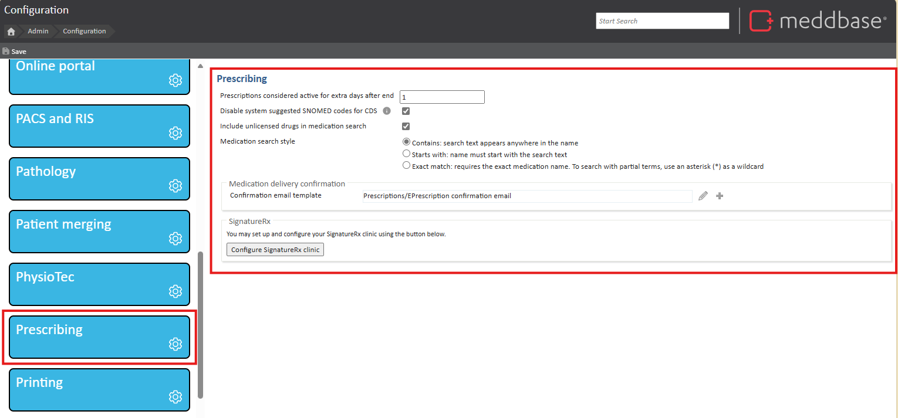

Meddbase System Administrators/Superusers with access to the Admin section of the Start Page can view and modify a host of configuration options and settings controlling the behaviour and workflows in the application. Many of the above are configured/controlled via the Configuration section*.
The Prescribing section within Admin > Configuration in Meddbase contains settings that directly support Clinical Decision Support (CDS) and ePrescribing. These configurations influence how prescribing behaviour is handled in the system and how safety checks are applied when clinicians issue medications.
This is a new section that consolidates existing settings previously spread across different areas, particularly those related to Prescribing and CDS. Bringing them together provides a clearer, centralised place for managing prescribing logic and decision support tools.
Meddbase integrates with First Data Bank (FDB), a comprehensive drug database that also powers the CDS engine (via the Multilex Engine). This engine provides real-time safety checks such as:
This article is an overview of the Admin > Configuration>Prescribing section in Meddbase, and the definition of the settings within.

| Prescribing Setting | Description |
|---|---|
| Prescriptions considered active for extra days after end | This setting controls how many days a prescription is considered active after its end date. During this time, the prescription will still be included in the clinical decision support (CDS) engine and may trigger alerts. Reducing this value helps prevent outdated prescriptions from causing unnecessary warnings. Default: 90 days. All chambers utilise the default value unless changed. This was previously under Config> Advanced. |
| Disable System Suggested SNOMED codes for CDS | When enabled, this setting stops unconfirmed System Suggested SNOMED codes from being passed to the Clinical Decision Support (CDS) engine. Only SNOMED codes that have been reviewed and confirmed by a clinical user will be used to trigger CDS alerts, such as contraindications or allergy warnings. This helps ensure that only accurate, clinician-approved information is used to support safe prescribing decisions. When enabled: Only confirmed SNOMED codes are passed to CDS. When disabled: Both confirmed and unconfirmed system-suggested codes may influence CDS warnings. Learn more about working with SNOMED codes here. Enabling the use of SNOMED CT is still within the Configuration> Appointments section. |
| *Include unlicensed drugs in medication search | When enabled, the prescribing search will include unlicensed drugs from the FirstDataBank drug formulary. This can be useful in settings where clinicians may prescribe unlicensed medications under specific, approved circumstances. When enabled: Unlicensed drugs appear in the medication search results. When disabled: Only UK licensed drugs are searchable and selectable.
|
| *Medication search style | This setting allows administrators to configure how the prescribing search matches drug names. It affects how clinicians find medications when typing in the search bar during prescribing.
|
| Medication delivery confirmation email template | This setting allows administrators to select or edit the template used for medication delivery confirmation emails sent to patients. |
| Signature RX | This setting allows administrators to set up and configure integration with SignatureRx, a third-party electronic prescription delivery service. Use the "Configure SignatureRx Clinic" button to connect your Meddbase chamber to SignatureRx for the first time. Once configured, clinicians can send prescriptions electronically via SignatureRx directly from Meddbase. |
Settings marked with * are new settings released June 2025.
If System Suggested Codes are enabled for CDS, medical users will see a message prompting them to review relevant codes when prescribing. Clicking here in the message box will take them to the SNOMED Codes Review page, where they can view, select, or interact with the suggested codes.